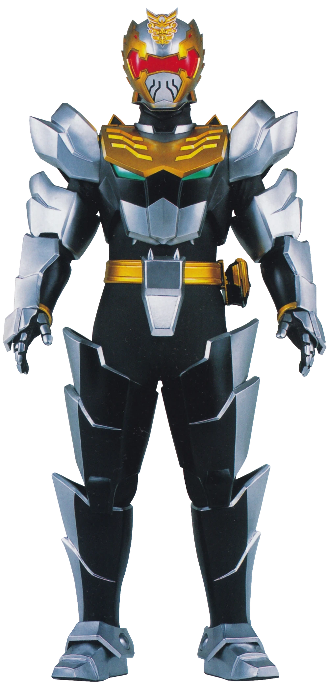
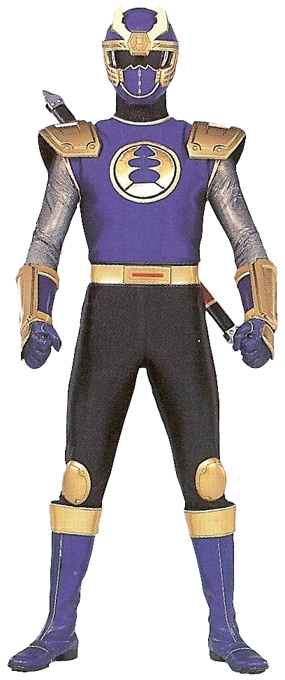
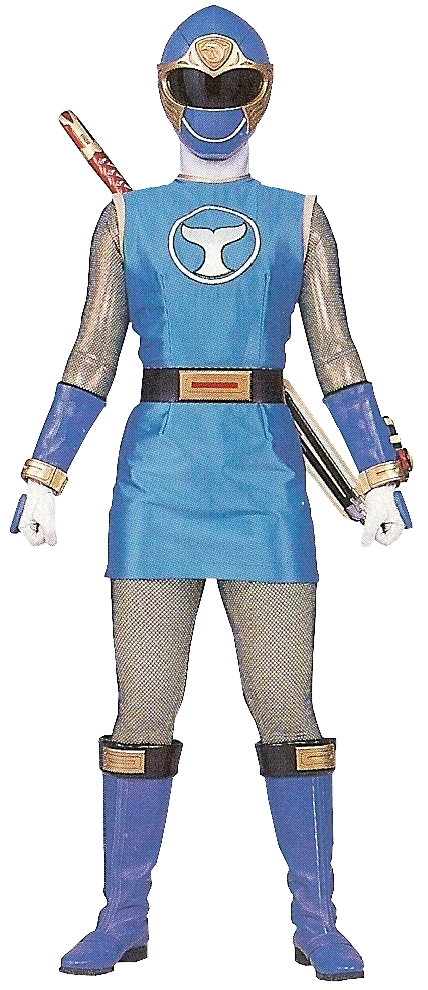
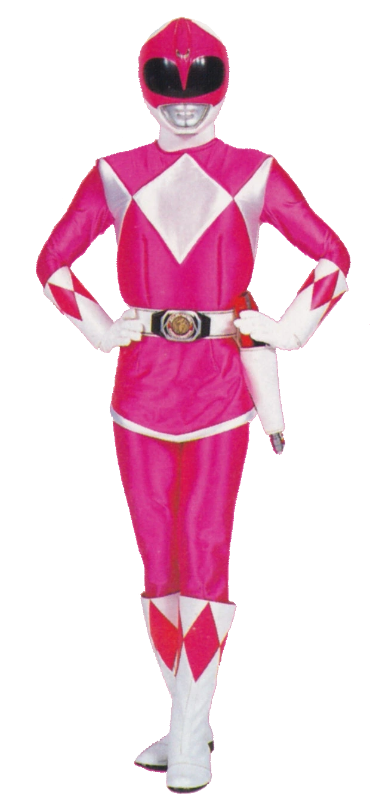
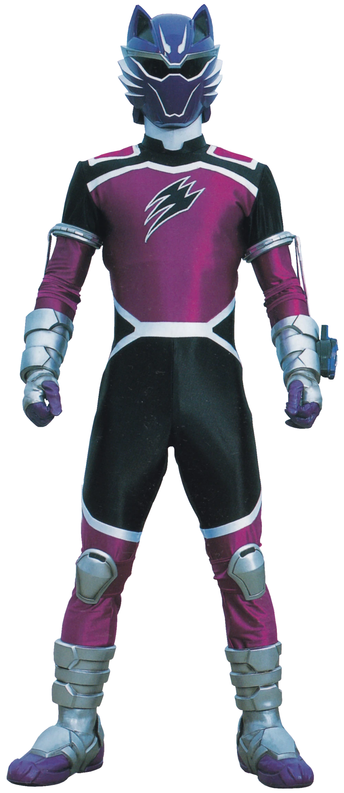
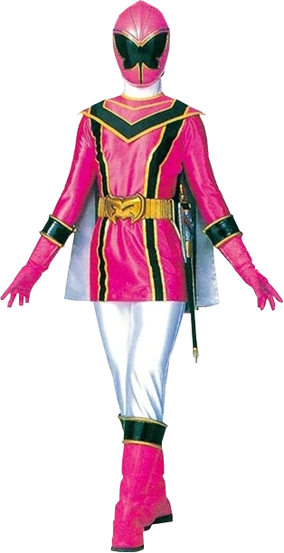
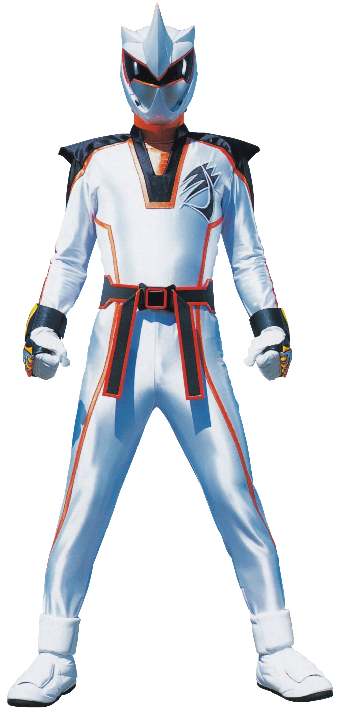
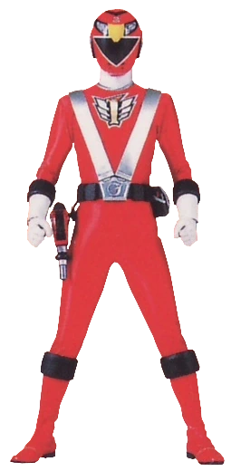
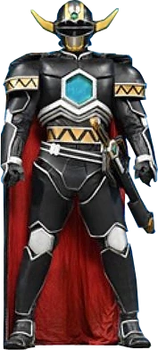
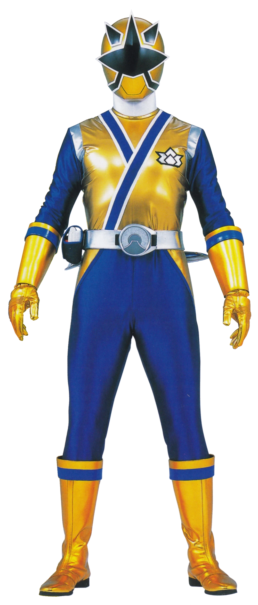

Top 10 People of Color
Article Published by Cameron at 05/06/2024 10:22 PM GMT
The 10 best people of color, ranked!
10. Robo Knight
Robo Knight is the first Sixth Ranger of the Mega Rangers. He also transforms into the Lion Zord which forms the Lion Mechazord and Gosei Grand Megazord, among other combinations. In Power Rangers Super Megaforce, Orion takes his place.
9. Ninja Storm Navy
Blake Bradley is Hunter's brother, and the Navy Thunder Ranger of the Ninja Storm Rangers.
8. Ninja Storm Blue
Tori Hanson is the Blue Wind Ranger of the Ninja Storm Rangers and is the first female Blue Power Ranger in show history. In Power Rangers Operation Overdrive, four years later, Tori is recruited and her powers would be completely restored by Sentinel Knight for conforming part of the Retro Rangers helping the Overdrive Rangers against Thrax and his Evil Alliance.
7. Mighty Morphin Pink
Kimberly "Kim" Ann Hart is the first Pink Ranger of the Mighty Morphin Power Rangers in the 'modern era'. She later became the first Pink Ninja Ranger of the Ninja Rangers, later giving her powers as Pink Ranger to Kat for her departure from the Mighty Morphin team. During both the TV series, she has temporarily assumed the form of the Blue Ranger. Retroactively, she is also referred to as the Mighty Morphin Pink Ranger or Pink Mighty Morphin Ranger, though these are in reference to the show, as opposed to proper labels. In Turbo: A Power Rangers Movie, Kimberly also returned helping the Turbo Rangers against Divatox, her crew and Maligore. Many years later, during the events of Power Rangers Beast Morphers Season 2, Kimberly responded to her old teammate Jason's signal, forms part of the Legendary Dino Rangers army against Goldar Maximus and his Army of Foot Soldiers.
6. Jungle Fury Wolf
Blake Bradley is Hunter's brother, and the Navy Thunder Ranger of the Ninja Storm Rangers.
5. Mystic Force Pink
Vida "V" Rocca is the Pink Mystic Ranger of the Mystic Force Power Rangers.
4. Jungle Fury Rhino
Dominic "Dom" Hargan is the Jungle Fury Rhino Ranger of the Jungle Fury Rangers. He is later retroactively referred to as Rhino Ranger though this is in reference to the show and his color as opposed to being a proper label.
3. RPM Red
Scott Truman is Ranger Operator Series Red, otherwise known as Ranger Red, leader of the Ranger Operators in Power Rangers RPM. His operation number is one. Retroactively, he is also referred to as the RPM Red Ranger or Red RPM Ranger, though these are in reference to the show as opposed to proper labels.
2. Magna Defender
Michael "Mike" Corbett was a soldier of Terra Venture. Though he was the one who pulled the Quasar Saber containing the Red Galaxy Ranger powers, an ensuing battle forced him to hand the saber to his younger brother as he fell into an abyss to his assumed death. However, he is later revived and became the second Magna Defender after the original Magna Defender sacrificed his life to save Terra Venture.
1. Samurai Gold
Antonio Garcia is Samurai Ranger Light, the Gold Samurai Ranger of the Samurai Rangers and their Sixth Ranger who can control the element of Light. Six years later, he returned in Power Rangers Super Ninja Steel along with other Veteran Rangers, helping the Ninja Steel Rangers against Lord Draven and his army of Robo Rangers.